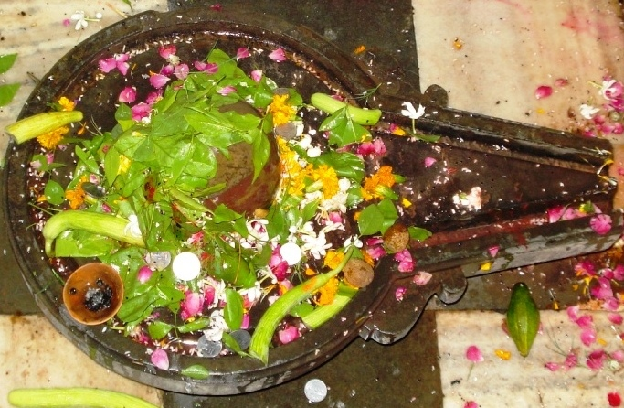

<?xml version="1.0" encoding="UTF-8"?><rss version="2.0"
	xmlns:content="http://purl.org/rss/1.0/modules/content/"
	xmlns:wfw="http://wellformedweb.org/CommentAPI/"
	xmlns:dc="http://purl.org/dc/elements/1.1/"
	xmlns:atom="http://www.w3.org/2005/Atom"
	xmlns:sy="http://purl.org/rss/1.0/modules/syndication/"
	xmlns:slash="http://purl.org/rss/1.0/modules/slash/"
	>

<channel>
	<title>Panchaksheshwar &#8211; Varanasi Temples</title>
	<atom:link href="index.html" rel="self" type="application/rss+xml" />
	<link>../../../../../index.html</link>
	<description>Temples of Varanasi as referred to in Kashi Khand</description>
	<lastBuildDate>Thu, 19 Jun 2025 05:16:46 +0000</lastBuildDate>
	<language>en-US</language>
	<sy:updatePeriod>hourly</sy:updatePeriod>
	<sy:updateFrequency>1</sy:updateFrequency>
	<generator>https://wordpress.org/?v=4.6.29</generator>
	<item>
		<title>PANCHAKSHESHWAR</title>
		<link>../../../../../shiva-temples/panchaksheshwar/index.html</link>
		<pubDate>Mon, 10 May 2010 15:11:23 +0000</pubDate>
		<dc:creator><![CDATA[admin]]></dc:creator>
				<category><![CDATA[Other Shiva Temples (L-R)]]></category>
		<category><![CDATA[Panchaksheshwar]]></category>
		<category><![CDATA[Shiva Temples]]></category>
		<category><![CDATA[trilochan]]></category>

		<guid isPermaLink="false">../../../../../p=408.html</guid>
		<description><![CDATA[After the few batches of Shiv Gans failed to return, Lord Shiva sent few more batches of Shiv Gans from Mandarachal to Kashi.  (Regarding deputation of Shiv Gans to Kashi, devotees are requested to refer to Kukkuteshwar Ling). These Shiv Gans also decided to settle down in Kashi and they installed Shiv Lings which came [&#8230;]]]></description>
				<content:encoded><![CDATA[<p>After the few batches of Shiv Gans failed to return, Lord Shiva sent few more batches of Shiv Gans from Mandarachal to Kashi.  (Regarding deputation of Shiv Gans to Kashi, devotees are requested to refer to Kukkuteshwar Ling).</p>
<p>These Shiv Gans also decided to settle down in Kashi and they installed Shiv Lings which came to be known after their names. One Shiv Ling named Panchaksheshwar was installed in the vicinity of Trilochaneshwar.</p>
<p>Kashi Khand, Chapter 55 states that a devotee who worships Panchaksheshwar will always be respected in his community.</p>
<p></p>
<p style="text-align: center;"><strong>(PANCHAKSHESHWAR)</strong></p>
<p><strong><span style="text-decoration: underline;">LOCATION OF PANCHAKSHESHWAR</span></strong></p>
<p>Panchaksheshwar is located near Trilochaneshwar Temple at  Trilochan Ghat and is also known as Rudraksheshwar.   The temple is approachable from Birla Hospital after Machhodari upto which place, people can travel by Auto or Cycle Rickshaw. Alternatively, they can have a boat ride upto Trilochan Ghat and climb the steps and enter the gully. The municipal number of the temple premises is A-2/56 and there is a hand pump nearby.<strong> </strong></p>
<p><strong><span style="text-decoration: underline;">TYPES OF POOJAS</span></strong></p>
<p>The temple is open for worship 05.30 a.m. to 12.00 noon and 05.00 p.m. to 11 p.m.</p>
<h4></h4>
]]></content:encoded>
			</item>
	</channel>
</rss>
